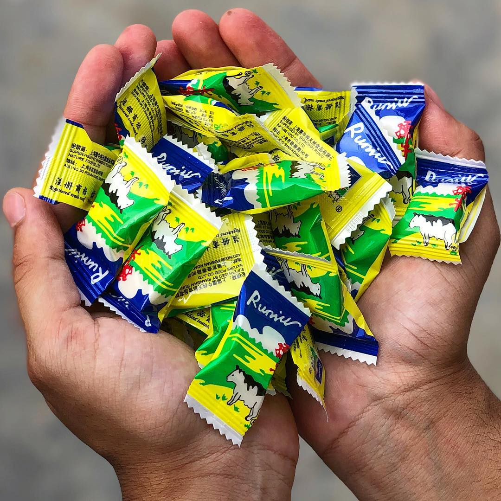

About Gai Chocolate
Gai Chocolate is a traditional and beloved Nepali chocolate bar known for its rich, creamy taste. Often cherished by people of all ages, Gai Chocolate has become a nostalgic treat for many, bringing back memories of childhood.
Interesting Facts
- A Cultural Icon: Gai Chocolate has been a staple treat in Nepal for decades, often evoking nostalgia among those who grew up enjoying it.
- Distinctive Packaging: Known for its unique packaging, Gai Chocolate’s wrapper features a traditional design that hasn't changed much over the years, adding to its charm.
- Affordable Sweetness: Gai Chocolate is an affordable and accessible treat, making it popular among schoolchildren and adults alike across Nepal.
- Locally Made: Gai Chocolate is produced locally in Nepal, supporting the local economy and maintaining a fresh, authentic taste.
- Popular Festival Treat: The chocolate is frequently given as a gift or shared among friends and family during festivals like Dashain and Tihar.
Nutritional Information
Here's a nutritional breakdown for a standard 30g serving of Gai Chocolate:
- Calories: 150 kcal
- Total Fat: 9g
- Saturated Fat: 5g
- Trans Fat: 0g
- Cholesterol: 2mg
- Sodium: 20mg
- Total Carbohydrates: 16g
- Dietary Fiber: 2g
- Sugars: 15g
- Protein: 2g
- Iron: 4% Daily Value (DV)
- Calcium: 6% DV